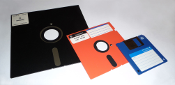

|  | DisqueteTipo de soporte: magnético Acceso: aleatorio Invención: 1967 Capacidad: Los primeros disquetes tenían una capacidad de 170kBytes, y un tamaño de 8 pulgadas (20,32cm). Con los años, el tamaño se fue reduciendo, y la capacidad aumentando, hasta alcanzar los 2.88MB en el formato de 3,5 pulgadas (8,89cm) |